Tastaturkurzbefehle
Die folgenden Tabellen führen alle Tastaturkurzbefehle von LemmaLoom auf, nach Menüs getrennt. Zu jedem Kurzbefehl steht dabei, wo genau er gilt.
Die Symbole für die Sondertasten, die in diesen Menüs vorkommen, erklärt der Abschnitt Konventionen in Kapitel 1, Einführung. ⌘ steht für die Befehlstaste, ⇧ für die Umschalttaste, ⌥ für die Wahltaste und ⌃ für die Control-Taste. Die hier angegebenen Kurzbefehle gelten für eine US-Tastaturbelegung. Wenn Sie eine andere Belegung verwenden, legt macOS Kurzbefehle wie ⇧⌘[ unter Umständen auf Tasten, die Ihnen zur Verfügung stehen; das Menü zeigt dann die geänderten Tasten.
So funktionieren Kurzbefehle
Jeder Kurzbefehl in LemmaLoom gehört zu einem Befehl in der Menüleiste, und das Menü zeigt neben dem Befehl die Tasten, die Sie dafür drücken. Ausnahmen sind die Esc-Taste, der Zeilenschalter, die Pfeiltasten und die Rückschritttaste (⌫); sie wirken auf den Teil des Fensters, mit dem Sie gerade arbeiten (siehe Esc-Taste, Zeilenschalter und Pfeiltasten weiter unten in diesem Kapitel). Bei manchen Aktionen klicken oder scrollen Sie zusätzlich zum Tastendruck (siehe Klicks mit Sondertaste weiter unten in diesem Kapitel). Schließlich hat der Skripteditor im Fenster „Analysatoren“ eigene Tastaturkurzbefehle zum Bearbeiten (siehe Kapitel 20, Eigene Analysatoren).
Kurzbefehle wirken immer auf das aktive Fenster. Ist das Hauptfenster aktiv, wirken die Befehle für ein Dokument auf das Dokument im aktiven Tab. In der geteilten Ansicht wirken sie auf den Bereich, in den Sie zuletzt geklickt haben; er heißt aktiver Bereich (siehe Der aktive Bereich in Kapitel 9, Übersetzungen und geteilte Ansicht).
Ein Kurzbefehl funktioniert nur, solange sein Befehl im Menü verfügbar ist. Dokument ▸ Code (⇧⌘C) etwa bleibt deaktiviert, bis Sie in der Leseansicht ein Wort oder eine Textstelle auswählen. Was ein Befehl voraussetzt, steht jeweils in der letzten Spalte der folgenden Tabellen.
Einige Befehle ändern je nach Situation ihren Namen, behalten aber ihre Tasten. Außerdem haben manche Tastenkombinationen je nach Fenster eine andere Funktion:
- ⇧⌘B ist Lesezeichen oder, wenn die Auswahl ein Lesezeichen überlappt, Lesezeichen entfernen.
- ⇧⌘L ist Verknüpfung oder, sobald Sie eine Verknüpfung begonnen haben, Verknüpfung abschließen.
- ⇧⌘A ist Automatisch kodieren…, sofern nicht mehr als eine der aktivierten Lenses Textstellen automatisch kodieren kann. Sind mehrere solche Lenses aktiviert, gehört die Tastenkombination zum ersten der Befehle, die nach ihnen benannt sind, etwa Mit Heckenausdrücke automatisch kodieren….
- ⇧⌘P wechselt bei der Wiedergabe von Aufnahmen zwischen Wiedergabe und Pausieren.
- ⌘W schließt im Hauptfenster Tabs (Tab schließen), solange ein Tab geöffnet ist. Überall sonst gehört ⌘W stattdessen zu Schließen.
- ⌘⌫ löscht Projekte, Sets, Gruppen oder Dokumente, die in der Seitenleiste ausgewählt sind (Projekt löschen, Set löschen, Gruppe löschen, Dokument löschen oder Dokumente löschen). Sind mehrere Dokumente ausgewählt, löscht der Befehl sie alle auf einmal. Im Fenster „Analysatoren“ löscht ⌘⌫ Analysatoren aus der Liste (Analysator löschen), solange die Liste aktiv ist.
- ⌘+, ⌘- und ⌘0 vergrößern, verkleinern und setzen die Textgröße zurück (Größerer Text, Kleinerer Text, Textgröße zurücksetzen); im Fenster „Diagramm“ zoomen sie dagegen hinein und heraus und stellen die Originalgröße wieder her (Vergrößern, Verkleinern, Originalgröße).
- ⌃⌘F ist Vollbildmodus oder, im Vollbildmodus, Vollbildmodus aus.
Während Sie den Text eines Dokuments bearbeiten, treten Sichern (⌘↩) und Abbrechen (⌘.) an die Stelle von Bearbeiten (⇧⌘E). Beim Verknüpfen von Textstellen erscheint unter Verknüpfung abschließen der Befehl Verknüpfung abbrechen (⌥⇧⌘L).
Kurzbefehle in den einzelnen Fenstern
LemmaLoom hat ein Hauptfenster und mehrere kleinere Fenster. Alle teilen sich eine Menüleiste. Die meisten Befehle in den Menüs brauchen jedoch einen Kontext, den nur das Hauptfenster oder ein geöffnetes Dokument liefert. Ist ein anderes Fenster aktiv, erscheinen diese Befehle deshalb deaktiviert, bis Sie in das Hauptfenster klicken. Einige der kleineren Fenster bieten zusätzliche Befehle.
| Aktives Fenster | Kurzbefehle, die funktionieren |
|---|---|
| Das Hauptfenster | Alle, sofern geöffnet ist, worauf sie wirken, außer denen, die zum Fenster „Diagramm“ und zum Fenster „Analysatoren“ gehören |
| Ein Dokument in einem eigenen Fenster (wählen Sie Fenster ▸ In neuem Fenster öffnen, oder klicken Sie mit der rechten Maustaste auf den Tab eines Dokuments und wählen Sie In neuem Fenster öffnen) | Das Menü Dokument; Suchen, Weitersuchen und Rückwärts suchen; Inspektor ein-/ausblenden und die vier Tabs des Inspektors; Größerer Text, Kleinerer Text und Textgröße zurücksetzen; Abfrage ausführen, wenn der Inspektor eine Abfrage zeigt; die Befehle unter Darstellung ▸ Wortskizze, wenn er eine Wortskizze zeigt; Schließen (⌘W) |
| Das Wortskizzen-Fenster | Die Befehle unter Darstellung ▸ Wortskizze; Schließen (⌘W) |
| Das Fenster „Diagramm“ | Vergrößern, Verkleinern und Originalgröße; Schließen (⌘W) |
| Das Codebuch-Fenster | Abfrage ausführen in seiner Ansicht Abfragen und die Befehle unter Darstellung ▸ Wortskizze in seiner Ansicht Wortskizze; Schließen (⌘W) |
| Das Abfragen-Fenster | Abfrage ausführen (⌘R); Schließen (⌘W) |
| Das Fenster „Analysatoren“ | Analysator löschen (⌘⌫), solange die Liste aktiv ist; Schließen (⌘W) |
| Jedes andere Fenster, etwa „Tags“, „Attribute“, „Aktivität“, „Glossar“ oder „Einstellungen“ | Schließen (⌘W) |
Einige Kurzbefehle aus den Menüs stehen unabhängig davon zur Verfügung, welches Fenster den Fokus hat, nämlich Ablage ▸ Neues Fenster (⌘N), LemmaLoom ▸ Einstellungen … (⌘,), Fenster ▸ Aktivität (⌥⌘0), Fenster ▸ Im Dock ablegen (⌘M), Bearbeiten ▸ Widerrufen (⌘Z) und Bearbeiten ▸ Wiederholen (⇧⌘Z). Auch die üblichen Kurzbefehle von macOS funktionieren wie gewohnt, etwa Kopieren (⌘C) und „LemmaLoom“ beenden (⌘Q). Darstellung ▸ Vollbildmodus funktioniert im Hauptfenster, im Abfragen-Fenster und in Ergebnisfenstern.
Kurzbefehle nach Menüs
Die Tabellen folgen der Menüleiste von links nach rechts. Jede Tabelle führt alle Befehle von LemmaLoom in ihrem Menü der Reihe nach auf.
LemmaLoom
| Befehl | Kurzbefehl | Wo er funktioniert |
|---|---|---|
| LemmaLoom ▸ Über LemmaLoom | Keiner | In jedem Fenster. Siehe Über LemmaLoom in Kapitel 26, Hilfe und Support. |
| LemmaLoom ▸ Einstellungen … | ⌘, | In jedem Fenster. Öffnet die Einstellungen oder wechselt zu ihnen, wenn sie bereits geöffnet sind. Siehe Kapitel 24, Einstellungen und Darstellung. |
| LemmaLoom ▸ „LemmaLoom“ ausblenden | ⌘H | In jedem Fenster. Klicken Sie im Dock auf LemmaLoom, um seine Fenster wieder einzublenden. |
| LemmaLoom ▸ Andere ausblenden | ⌥⌘H | In jedem Fenster. Blendet die Fenster anderer Programme aus. |
| LemmaLoom ▸ „LemmaLoom“ beenden | ⌘Q | In jedem Fenster |
Mit dem Beenden endet der Widerrufverlauf, denn er besteht nur, solange LemmaLoom läuft (siehe Wie lange der Verlauf besteht in Kapitel 23, Widerrufen und Wiederholen). LemmaLoom wird auch beendet, wenn Sie sein letztes offenes Fenster schließen, etwa das Hauptfenster mit ⇧⌘W, während sonst nichts geöffnet ist.
Ablage
| Befehl | Kurzbefehl | Wo er funktioniert |
|---|---|---|
| Ablage ▸ Neues Fenster | ⌘N | In jedem Fenster. Öffnet ein weiteres Hauptfenster. |
| Ablage ▸ Neues Projekt | ⇧⌘N | Im Hauptfenster |
| Ablage ▸ Neue Gruppe | ⌥⌘N | Im Hauptfenster, sobald ein Projekt aktiv ist. Die Gruppe erscheint in der Seitenleiste, und Sie können sofort ihren Namen eingeben. |
| Ablage ▸ Importieren ▸ Dokumente | ⇧⌘I | Im Hauptfenster, sobald ein Projekt aktiv ist. Öffnet einen Dateidialog für Text-, PDF-, Audio- und Videodateien. |
| Ablage ▸ Importieren ▸ Webseiten | ⌥⇧⌘I | Im Hauptfenster, sobald ein Projekt aktiv ist. Öffnet einen Dialog für Webadressen. |
| Ablage ▸ Importieren ▸ REFI-QDA-Projekt, REFI-QDA-Codebuch und LemmaLoom-Archiv | Keiner | Im Hauptfenster. REFI-QDA-Codebuch setzt ein aktives Projekt voraus. Siehe Kapitel 22, Austausch und Export. |
| Ablage ▸ Importieren ▸ Beispielprojekt | Keiner | Im Hauptfenster. Fügt „Klimadebatte“ als neues Projekt in der Sprache der Benutzeroberfläche hinzu. Siehe Das Beispielprojekt in Kapitel 1, Einführung. |
| Ablage ▸ Exportieren ▸ REFI-QDA-Projekt, REFI-QDA-Codebuch und LemmaLoom-Projekt | Keiner | Im Hauptfenster, sobald ein Projekt aktiv ist |
| Ablage ▸ Exportieren ▸ LemmaLoom-Dokument oder LemmaLoom-Dokumente | Keiner | Im Hauptfenster, wenn in der Seitenleiste Dokumente ausgewählt sind oder in der Leseansicht ein Dokument aktiv ist. Der Name richtet sich nach der Zahl der ausgewählten Dokumente. Siehe Dokumente exportieren in Kapitel 22, Austausch und Export. |
| Ablage ▸ Exportieren ▸ LemmaLoom-Set | Keiner | Im Hauptfenster, wenn ein Set in der Seitenleiste ausgewählt oder im aktiven Tab geöffnet ist. Siehe Ein Set exportieren in Kapitel 22, Austausch und Export. |
| Ablage ▸ Tab schließen | ⌘W | Im Hauptfenster, solange ein Tab geöffnet ist. Ist der rechte Bereich einer geteilten Ansicht aktiv, schließt der Befehl die geteilte Ansicht. |
| Ablage ▸ Fenster schließen | ⇧⌘W | Im Hauptfenster, solange ein Tab geöffnet ist |
| Ablage ▸ Schließen | ⌘W | In allen anderen Fenstern und im Hauptfenster, wenn kein Tab geöffnet ist. Schließt das Fenster. |
Alle Befehle zum Importieren und Exportieren außer Importieren ▸ Dokumente und Importieren ▸ Webseiten sind deaktiviert, solange ein anderer Import oder Export läuft.
Welcher Tab aktiv wird, nachdem Sie einen Tab geschlossen haben, beschreibt Tabs schließen in Kapitel 3, Projekte und Dokumente.
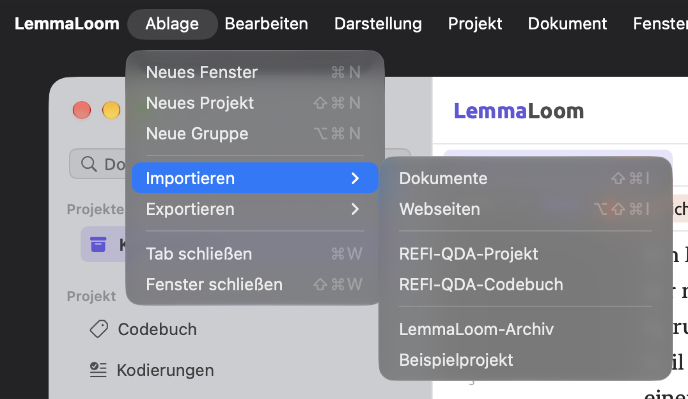
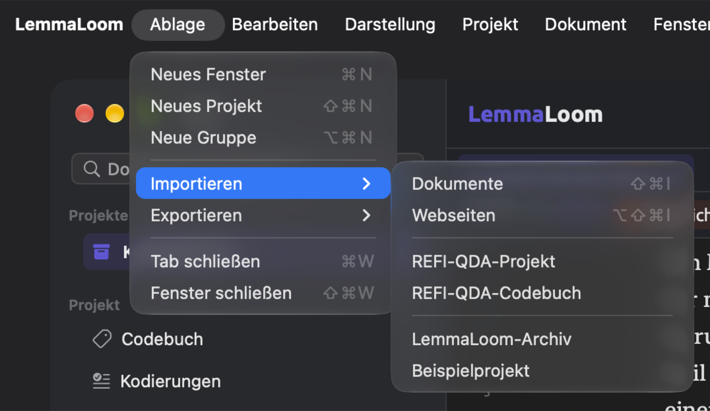
Bearbeiten
| Befehl | Kurzbefehl | Wo er funktioniert |
|---|---|---|
| Bearbeiten ▸ Widerrufen | ⌘Z | In jedem Fenster, in dem es einen Schritt zu widerrufen gibt. Der Befehl nennt den Schritt, etwa Code anwenden widerrufen. |
| Bearbeiten ▸ Wiederholen | ⇧⌘Z | Nach einem Widerrufen, bis Sie eine neue Änderung vornehmen |
| Bearbeiten ▸ Ausschneiden, Kopieren, Einsetzen | ⌘X, ⌘C, ⌘V | In Textfeldern. Kopieren kopiert auch Text, der in der Leseansicht ausgewählt ist. |
| Bearbeiten ▸ Alles auswählen | ⌘A | In Textfeldern und in der Leseansicht, sobald Sie in den Text eines Dokuments geklickt haben. Dort wählt der Befehl das ganze Dokument aus, und die Auswahlleiste erscheint. |
| Bearbeiten ▸ In Kategorie verschieben | Keiner | In der Ansicht Wörterbücher, wenn in einer Kategorie Begriffe ausgewählt sind. Verschiebt sie in die Kategorie, die Sie wählen. Siehe Begriffe hinzufügen und entfernen in Kapitel 19, Wörterbücher. |
| Bearbeiten ▸ Analysator löschen | ⌘⌫ | Im Fenster „Analysatoren“, wenn ein Analysator ausgewählt ist. Der Kurzbefehl funktioniert, solange die Liste aktiv ist, was nach einem Klick auf einen Analysator der Fall ist. Siehe Einen Analysator löschen in Kapitel 20, Eigene Analysatoren. |
| Bearbeiten ▸ Suchen | ⌘F | Wenn ein Dokument aktiv ist, dessen Text geladen ist, außer während Sie es bearbeiten. Öffnet die Suchleiste. Erneut gedrückt, schließt der Kurzbefehl die Leiste und leert die Suche. |
| Bearbeiten ▸ Weitersuchen | ⌘G | Solange die Suchleiste Treffer hat. Auf den letzten Treffer folgt der erste. |
| Bearbeiten ▸ Rückwärts suchen | ⇧⌘G | Solange die Suchleiste Treffer hat. Vor dem ersten Treffer kommt der letzte. |
| Bearbeiten ▸ Dokument suchen | ⇧⌘F | Im Hauptfenster, sobald ein Projekt aktiv ist. Setzt die Einfügemarke in das Feld Dokumente durchsuchen oben in der Seitenleiste und blendet vorher die Seitenleiste ein, falls sie ausgeblendet ist. Siehe Die Seitenleiste in Kapitel 3, Projekte und Dokumente. |
| Bearbeiten ▸ Abfrage aus Auswahl | Keiner | Wenn in der Leseansicht Wörter ausgewählt sind, außer während der Bearbeitung. Siehe Abfrage aus Auswahl in Kapitel 17, Abfragemuster und Erkundung. |
| Bearbeiten ▸ Neue Abfrage | Keiner | Überall, wo eine Abfrage angezeigt wird. Setzt eine leere Abfrage an die Stelle der aktuellen. |
| Bearbeiten ▸ Abfrage ausführen | ⌘R | Überall, wo das aktive Fenster eine Abfrage zeigt. Deaktiviert, solange die Abfrage einen Fehler hat, der ihre Ausführung verhindert, etwa ein ungültiges Muster. |
Jedes Fenster führt einen eigenen Widerrufverlauf, und ⌘Z wirkt nur auf den Verlauf des gerade aktiven Fensters. Steht die Einfügemarke in einem Textfeld, widerruft ⌘Z stattdessen die Eingabe in diesem Feld. Ausführliches zu beiden Aktionen finden Sie in Kapitel 23, Widerrufen und Wiederholen.
Abfrage ausführen führt die Abfrage, die das gerade aktive Fenster zeigt, sofort aus. Ein Fenster zeigt eine Abfrage an einer dieser Stellen:
- in der Facette Abfrage im Tab Multimodus des Inspektors (die Reihe unter den Tabs besteht aus Facetten; siehe Der Inspektor in Kapitel 2, Erste Schritte);
- in der Ansicht Abfragen eines Sets, eines Tags oder des Projekts, sowohl im Hauptfenster als auch im Codebuch-Fenster;
- im Abfragen-Fenster (über Fenster ▸ Abfragen).
Eine Abfrage in einem Dokument läuft nach jeder Änderung, die Sie an ihr vornehmen, von selbst. In einem Set oder Projekt, dessen Dokumente zusammen etwa 300.000 Tokens (Wörter und Satzzeichen) oder mehr umfassen, wartet eine Abfrage, die den Text dieser Dokumente liest, auf Sie und zeigt eine Schaltfläche Abfrage ausführen. Mit ⌘R starten Sie sie schneller als auf jedem anderen Weg (siehe Eine Abfrage ausführen in Kapitel 15, Eine Abfrage erstellen).
Neue Abfrage übernimmt die Einheit der aktuellen Abfrage, also die Art von Elementen, die sie findet (siehe Was gesucht wird in Kapitel 15, Eine Abfrage erstellen). Dabei werden alle bisher nicht gesicherten Änderungen verworfen. Mit Bearbeiten ▸ Widerrufen holen Sie diese Änderungen zurück.
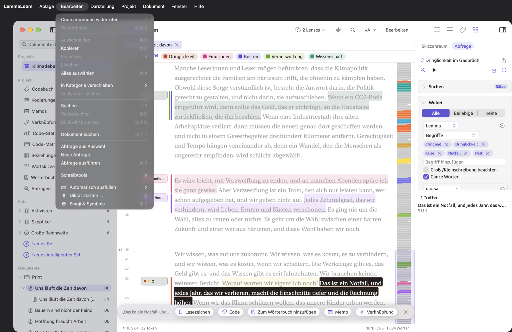
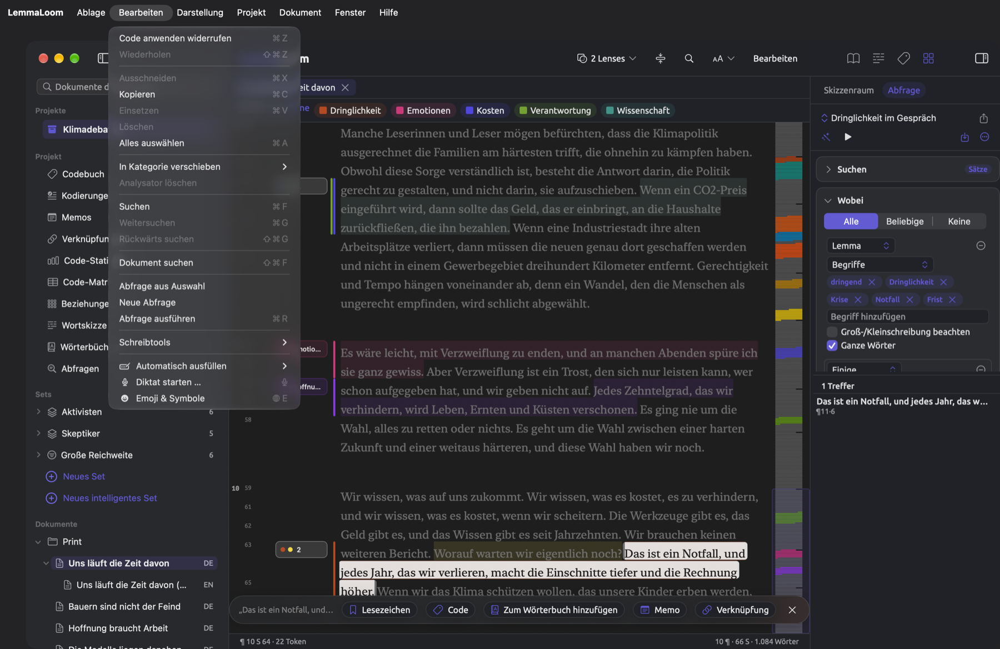
Darstellung
| Befehl | Kurzbefehl | Wo er funktioniert |
|---|---|---|
| Darstellung ▸ Seitenleiste ein-/ausblenden | ⌃⌘S | Im Hauptfenster |
| Darstellung ▸ Inspektor ein-/ausblenden | ⌃⌘I | Im Hauptfenster und im eigenen Fenster eines Dokuments. Im Hauptfenster ist der Befehl deaktiviert, solange der aktive Tab ein Set, ein Tag oder eine Ansicht des Projektregals ist. Jedes Dokument merkt sich, ob sein Inspektor eingeblendet war. |
| Darstellung ▸ Inspektor ▸ Text | ⌥⌘1 | Wenn ein Dokument aktiv ist, im Hauptfenster oder in seinem eigenen Fenster |
| Darstellung ▸ Inspektor ▸ Grammatik | ⌥⌘2 | Wie bei Text |
| Darstellung ▸ Inspektor ▸ Kodierung | ⌥⌘3 | Wie bei Text |
| Darstellung ▸ Inspektor ▸ Multimodus | ⌥⌘4 | Wie bei Text |
| Darstellung ▸ Größerer Text | ⌘+ | Wenn ein Dokument aktiv ist, im Hauptfenster oder in seinem eigenen Fenster. Bis 200 Prozent. |
| Darstellung ▸ Kleinerer Text | ⌘- | Wie bei Größerer Text. Bis hinunter auf 70 Prozent. |
| Darstellung ▸ Textgröße zurücksetzen | ⌘0 | Wie bei Größerer Text, wenn die Größe nicht 100 Prozent beträgt |
| Darstellung ▸ Vergrößern | ⌘+ | Im Fenster „Diagramm“. Siehe Das Fenster Diagramm in Kapitel 11, Der Grammatik-Inspektor. |
| Darstellung ▸ Verkleinern | ⌘- | Im Fenster „Diagramm“ |
| Darstellung ▸ Originalgröße | ⌘0 | Im Fenster „Diagramm“, wenn das Diagramm nicht in Originalgröße angezeigt wird |
| Darstellung ▸ An Fenster anpassen | Keiner | Im Fenster „Diagramm“ |
| Darstellung ▸ Gemeinsam scrollen | ⌥⌘L | Im Hauptfenster, in der geteilten Ansicht mit zwei Sprachfassungen eines Dokuments. Ein Häkchen zeigt, dass die Funktion eingeschaltet ist. Siehe Gemeinsam scrollen in Kapitel 9, Übersetzungen und geteilte Ansicht. |
| Darstellung ▸ Wortskizze ▸ Zurück | ⌘[ | In der Ansicht Wortskizze, im Wortskizzen-Fenster und in den Wortskizzen des Inspektors, sobald der Verlauf ein früheres Wort enthält. Siehe Zurück- und vorwärtsgehen in Kapitel 12, Wortskizze. |
| Darstellung ▸ Wortskizze ▸ Vorwärts | ⌘] | Wie bei Zurück, nachdem Sie zurückgegangen sind |
| Darstellung ▸ Wortskizze ▸ Wortfeld aktivieren | ⌘L | In der Ansicht Wortskizze, im Wortskizzen-Fenster und in den Wortskizzen des Inspektors. Setzt die Einfügemarke in das Feld Wort. |
| Darstellung ▸ Wortskizze ▸ Grammatik, Kodierung und Multimodus | ⌘1, ⌘2, ⌘3 | In der Ansicht Wortskizze, im Wortskizzen-Fenster und in den Wortskizzen des Inspektors. Wechselt in diesen Modus; ein Häkchen kennzeichnet den aktuellen. |
| Darstellung ▸ Vollbildmodus | ⌃⌘F | Im Hauptfenster, im Abfragen-Fenster und in Ergebnisfenstern. Das Menü zeigt die Tasten unter Umständen als fn F (die Globustaste und F); beides funktioniert. Siehe Die Leseansicht im Vollbildmodus in Kapitel 5, Lesen und Bearbeiten. |
⌥⌘1 bis ⌥⌘4 blenden den Inspektor ein, falls er gerade nicht angezeigt wird, und wechseln dann zum jeweiligen Tab. Ist ein Set, ein Tag oder eine Ansicht des Projektregals wie Codebuch der aktive Tab, wird der Inspektor automatisch geschlossen, und Inspektor ein-/ausblenden sowie ⌥⌘1 bis ⌥⌘4 sind deaktiviert. Mehr zum Projektregal finden Sie unter Das Projektregal in Kapitel 2, Erste Schritte.
Größerer Text, Kleinerer Text und Textgröße zurücksetzen ändern die Textgröße aller Dokumente in Schritten von 10 Prozent. Die drei Befehle verwenden dieselbe Einstellung wie der Regler Textgröße in den Einstellungen (siehe Textgröße in Kapitel 5, Lesen und Bearbeiten); im Fenster „Diagramm“ dagegen ändern ⌘+, ⌘- und ⌘0 die Zoomstufe des Diagramms oder setzen sie zurück. Auf US-Tastaturen entspricht ⌘+ sowohl bei Größerer Text als auch bei Vergrößern dem Drücken von ⇧⌘=.
Die Befehle unter Darstellung ▸ Wortskizze wirken auf die Ansicht Wortskizze des Projekts, die Ansicht Wortskizze eines Sets oder Tags, das Wortskizzen-Fenster selbst und die Wortskizzen im Inspektor. Im Inspektor entsprechen die Modi seinen Wortskizzen. Wählen Sie etwa den Modus Grammatik, sehen Sie Wortskizze im Tab Grammatik des Inspektors; Kodierung ruft Code-Skizze im Tab Kodierung auf, und Multimodus zeigt Skizzenraum im Tab Multimodus. Alle drei speichern Ihre Wortskizzen im selben Verlauf, sodass das Wort erhalten bleibt.
Tableiste einblenden und Alle Tabs einblenden oben im Menü stammen direkt von macOS. Sie betreffen das Zusammenführen von Fenstern zu Tabs.
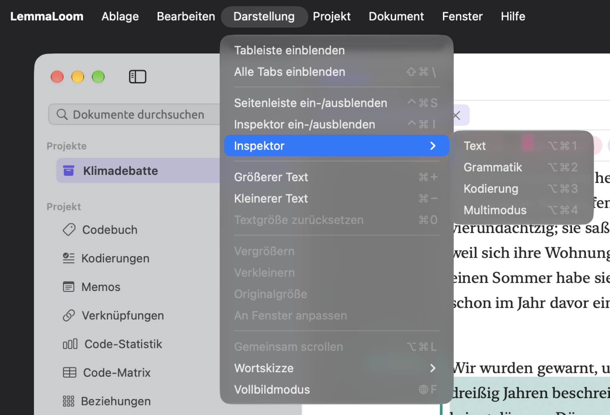
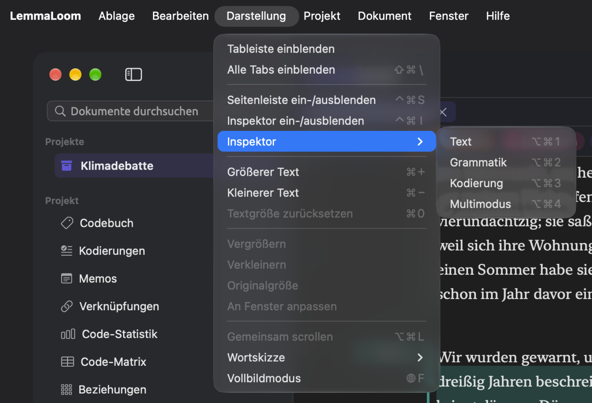
Projekt
Die meisten Befehle in diesem Menü wirken auf das, was in der Seitenleiste ausgewählt ist, und funktionieren deshalb im Hauptfenster. Die Befehle für Codes richten sich dagegen nach dem Code, der in einem beliebigen Fenster in der Ansicht Codebuch oder in der Facette Codes ausgewählt ist. Mehr dazu finden Sie in Kapitel 3, Projekte und Dokumente, in Kapitel 8, Sets, Gruppen, Tags und Attribute und unter Codes verwalten in Kapitel 7, Kodieren.
| Befehl | Kurzbefehl | Wo er funktioniert |
|---|---|---|
| Projekt ▸ Neues Set und Neues intelligentes Set | Keiner | Im Hauptfenster, sobald ein Projekt aktiv ist |
| Projekt ▸ Intelligentes Set bearbeiten | Keiner | Im Hauptfenster, wenn ein intelligentes Set in der Seitenleiste ausgewählt oder im aktiven Tab geöffnet ist |
| Projekt ▸ Code hinzufügen | Keiner | Im Hauptfenster, sobald ein Projekt aktiv ist |
| Projekt ▸ Untercode hinzufügen, Verschieben nach, Zusammenführen mit, Zu Code-Set hinzufügen und Code löschen | Keiner | Wenn in der Ansicht Codebuch oder in der Facette Codes ein Code ausgewählt ist |
| Projekt ▸ Umbenennen und Eigenschaften | Keiner | Im Hauptfenster, wenn in der Seitenleiste genau ein Dokument ausgewählt ist |
| Projekt ▸ In Gruppe verschieben und Zu Set hinzufügen | Keiner | Im Hauptfenster, wenn in der Seitenleiste Dokumente ausgewählt sind |
| Projekt ▸ Aus Set entfernen | Keiner | Im Hauptfenster, wenn in der Seitenleiste ein oder mehrere Dokumente unter demselben Set ausgewählt sind, sofern es kein intelligentes Set ist |
| Projekt ▸ Übersetzen | Keiner | Im Hauptfenster, wenn ein Original in der Seitenleiste ausgewählt oder in der Leseansicht aktiv ist |
| Projekt ▸ Projekt löschen, Set löschen, Gruppe löschen, Dokument löschen oder Dokumente löschen | ⌘⌫ | Im Hauptfenster, nachdem Sie in der Seitenleiste auf ein Projekt, ein Set oder eine Gruppe geklickt oder Dokumente unter Dokumente ausgewählt haben. Der Befehl ist nach dem benannt, was er löscht. |
| Projekt ▸ Attribute | Keiner | Im Hauptfenster, sobald ein Projekt aktiv ist. Öffnet das Attribute-Fenster. |
| Projekt ▸ Öffnen | Keiner | Im Hauptfenster, sobald ein Projekt aktiv ist. Führt die zehn Ansichten des Projektregals auf und öffnet die gewählte in einem Tab. |
Dokumente und Projekte werden erst nach einer Bestätigung gelöscht. Sets und Gruppen werden dagegen sofort gelöscht, und Bearbeiten ▸ Widerrufen (⌘Z) holt sie zurück.
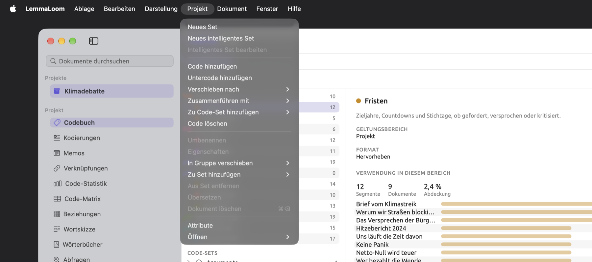
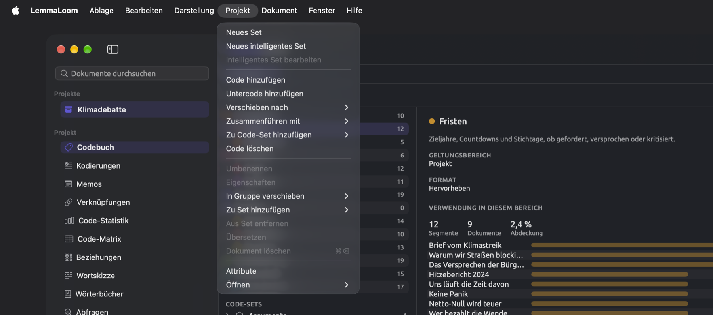
Dokument
Diese Befehle wirken auf das Dokument im aktiven Bereich oder im eigenen Fenster eines Dokuments.
| Befehl | Kurzbefehl | Wo er funktioniert |
|---|---|---|
| Dokument ▸ Bearbeiten | ⇧⌘E | Sobald der Text des Dokuments geladen ist. Macht aus der Leseansicht einen Texteditor. |
| Dokument ▸ Sichern | ⌘↩ | Während der Bearbeitung. Sichert den Text, den LemmaLoom danach erneut indiziert. |
| Dokument ▸ Abbrechen | ⌘. | Während der Bearbeitung. Verwirft alles, was Sie eingegeben haben, seit Sie Bearbeiten gewählt haben. |
| Dokument ▸ Code | ⇧⌘C | Wenn ein Wort oder eine Textstelle ausgewählt ist, außer während der Bearbeitung. Öffnet die Code-Palette, also die Liste der Codes, die Sie auf die Auswahl anwenden können. |
| Dokument ▸ In-vivo-Code | ⇧⌘V | Wie bei Code. Kodiert die Auswahl mit einem Code, der nach ihren Wörtern benannt ist, und legt diesen Code an, falls es noch keinen mit diesem Namen gibt. Siehe Eine Textstelle kodieren in Kapitel 7, Kodieren. |
| Dokument ▸ Automatisch kodieren… | ⇧⌘A | Wenn im Lens-Menü eine Lens für ein Wörterbuch, eine Abfrage oder einen Analysator aktiviert ist (siehe Kapitel 6, Lenses). Sind mehrere davon aktiviert, hat das Menü für jede einen eigenen Befehl mit dem Namen der Lens, etwa Mit Heckenausdrücke automatisch kodieren…, und ⇧⌘A gehört zum ersten. Siehe Textstellen automatisch kodieren in Kapitel 7, Kodieren. |
| Dokument ▸ Memo | ⇧⌘M | Wie bei Code. Öffnet den Dialog Neues Memo für die Auswahl. |
| Dokument ▸ Lesezeichen | ⇧⌘B | Wie bei Code. Öffnet den Dialog Neues Lesezeichen. Überlappt die Auswahl ein Lesezeichen, heißt der Befehl Lesezeichen entfernen und entfernt es sofort; ⌘Z holt es zurück. |
| Dokument ▸ Verknüpfung | ⇧⌘L | Wie bei Code. Beginnt eine Verknüpfung, die von der Auswahl ausgeht. Danach heißt der Befehl Verknüpfung abschließen. Wählen Sie die andere Textstelle aus, in diesem oder einem anderen Dokument, und drücken Sie erneut ⇧⌘L, um den Dialog Neue Verknüpfung zu öffnen. |
| Dokument ▸ Verknüpfung abbrechen | ⌥⇧⌘L | Solange Sie eine Verknüpfung anlegen, mit oder ohne Auswahl. Verwirft die begonnene Verknüpfung. |
| Dokument ▸ Wiedergabe | ⇧⌘P | In Audio- und Videodokumenten. Während die Aufnahme läuft, heißt der Befehl Pausieren. |
Die Befehle Bearbeiten, Sichern und Abbrechen sind deaktiviert, während LemmaLoom Ihre Änderungen sichert.
Mehr zum Anwenden von Codes, zum Anlegen von Memos, zum Setzen von Lesezeichen und zum Verknüpfen finden Sie in Kapitel 7, Kodieren. Das Bearbeiten Ihrer Texte und die Wiedergabe behandelt Kapitel 5, Lesen und Bearbeiten.
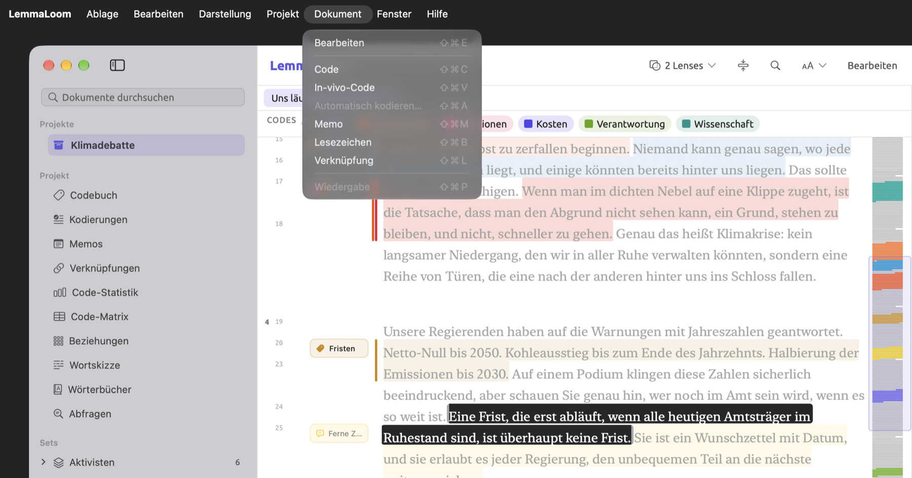
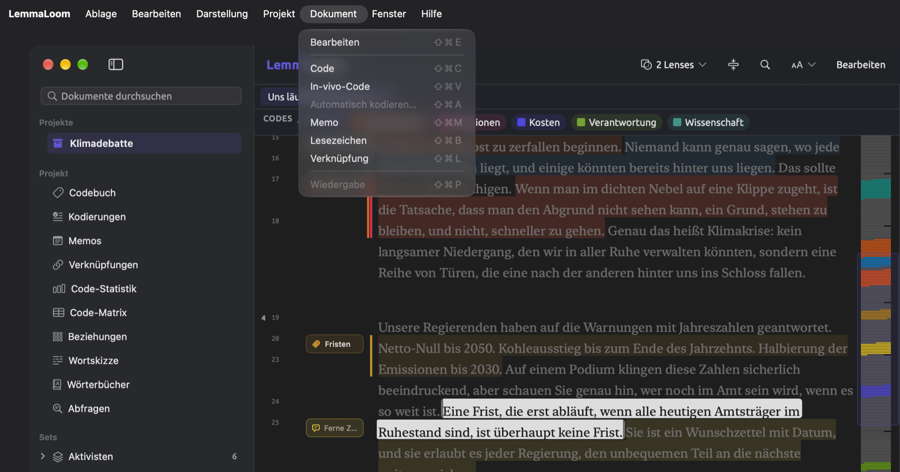
Fenster
| Befehl | Kurzbefehl | Wo er funktioniert |
|---|---|---|
| Fenster ▸ Im Dock ablegen | ⌘M | Im aktiven Fenster |
| Fenster ▸ Vorherigen Tab anzeigen | ⇧⌘[ | Im Hauptfenster, wenn mindestens zwei Tabs geöffnet sind. Vor dem ersten Tab kommt der letzte. |
| Fenster ▸ Nächsten Tab anzeigen | ⇧⌘] | Im Hauptfenster, wenn mindestens zwei Tabs geöffnet sind. Auf den letzten Tab folgt der erste. |
| Fenster ▸ In neuem Fenster öffnen | Keiner | Im Hauptfenster. Öffnet das Dokument im aktiven Bereich oder die Ansicht im aktiven Tab in einem eigenen Fenster. Im Tab eines Sets oder Tags öffnen sich nur die Ansichten Wortskizze und Abfragen in einem Fenster. Siehe Ein Dokument in einem eigenen Fenster öffnen in Kapitel 5, Lesen und Bearbeiten. |
| Fenster ▸ In geteilter Ansicht öffnen | Keiner | Im Hauptfenster, wenn ein Dokument aktiv ist. Führt die geöffneten Dokumente auf, die daneben angezeigt werden können. Siehe Zwei Dokumente nebeneinander öffnen in Kapitel 9, Übersetzungen und geteilte Ansicht. |
| Fenster ▸ Neben dem Original öffnen | Keiner | Im Hauptfenster, wenn eine Übersetzung in der Seitenleiste ausgewählt oder in der Leseansicht aktiv ist |
| Fenster ▸ Nebeneinander öffnen | Keiner | Im Hauptfenster, wenn in der Seitenleiste zwei Dokumente ausgewählt sind |
| Fenster ▸ Geteilte Ansicht schließen | Keiner | Im Hauptfenster, in der geteilten Ansicht |
| Fenster ▸ Aktivität | ⌥⌘0 | In jedem Fenster. Öffnet das Fenster „Aktivität“ oder wechselt zu ihm, wenn es bereits geöffnet ist. Siehe Das Fenster „Aktivität“ in Kapitel 4, Material importieren. |
| Fenster ▸ Analysatoren | Keiner | In jedem Fenster. Siehe Kapitel 20, Eigene Analysatoren. |
| Fenster ▸ Codebuch | Keiner | In jedem Fenster, sobald ein Projekt aktiv ist. Siehe Die Ansicht Codebuch in Kapitel 7, Kodieren. |
| Fenster ▸ Tags | Keiner | In jedem Fenster. Siehe Das Tags-Fenster in Kapitel 3, Projekte und Dokumente. |
| Fenster ▸ Abfragen | Keiner | In jedem Fenster. Siehe Das Abfragen-Fenster in Kapitel 15, Eine Abfrage erstellen. |
Gemeint sind die Tabs über der Leseansicht, also die Dokumente, Sets, Tags und Ansichten aus dem Projektregal. Wenn Sie einen Tab aktivieren, wird in einer gerade angezeigten geteilten Ansicht der linke Bereich zum aktiven Bereich.
Im unteren Teil des Menüs stellt macOS zwei weitere Befehle mit den Namen Vorherigen Tab anzeigen und Nächsten Tab anzeigen bereit; sie wechseln zwischen zusammengeführten Fenstern. Um zwischen den Tabs über der Leseansicht zu wechseln, verwenden Sie dagegen ⇧⌘[ und ⇧⌘]. Ganz unten im Menü steht schließlich die Liste der geöffneten Fenster von LemmaLoom.
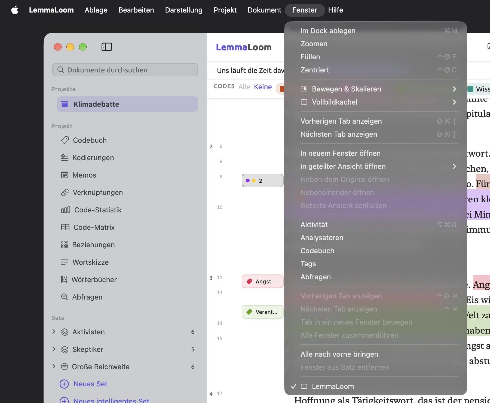
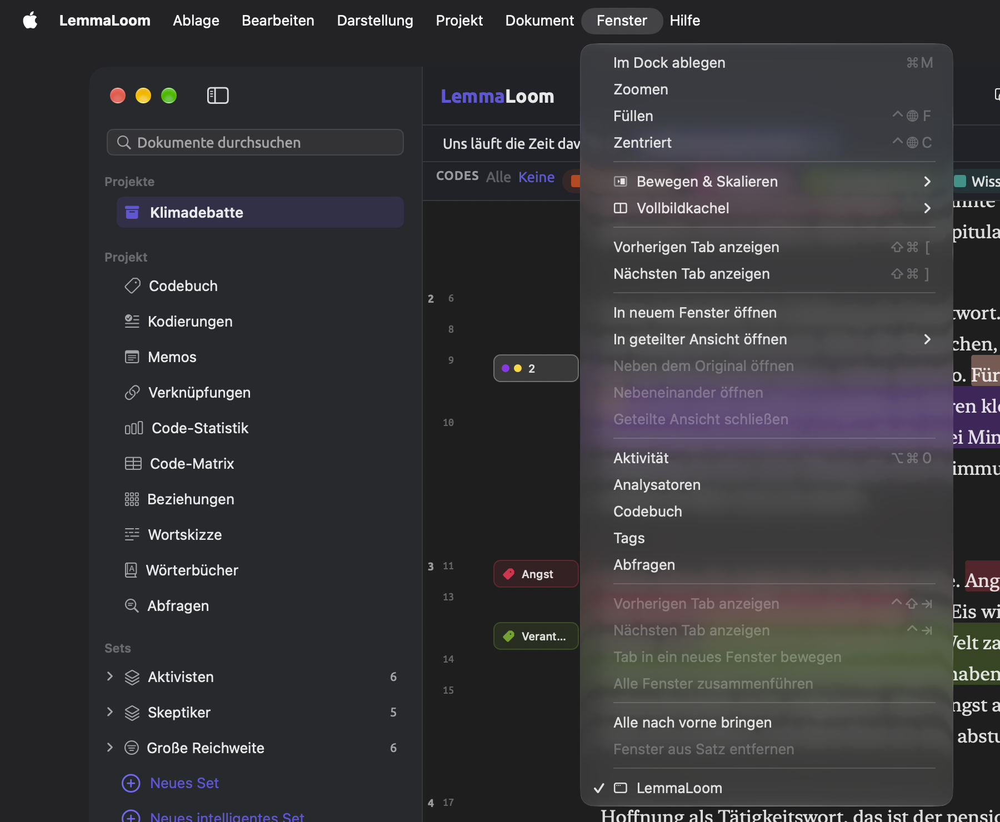
Hilfe
| Befehl | Kurzbefehl | Wo er funktioniert |
|---|---|---|
| Hilfe ▸ Glossar | Keiner | In jedem Fenster. Siehe Das Glossar in Kapitel 26, Hilfe und Support. |
| Hilfe ▸ Feedback senden | Keiner | In jedem Fenster. Siehe Feedback senden in Kapitel 26, Hilfe und Support. |
Schaltflächen mit Kurzbefehl
Viele Schaltflächen verhalten sich wie ein Menübefehl und haben dieselben Tasten wie dieser. Meist liegen sie in der Titelleiste oben im Lesebereich oder in der Suchleiste darunter. Manche erscheinen in der Auswahlleiste, sobald Sie etwas auswählen, und in der Wiedergabeleiste eines Audio- oder Videodokuments. Kapitel 5, Lesen und Bearbeiten beschreibt jede davon im Einzelnen.
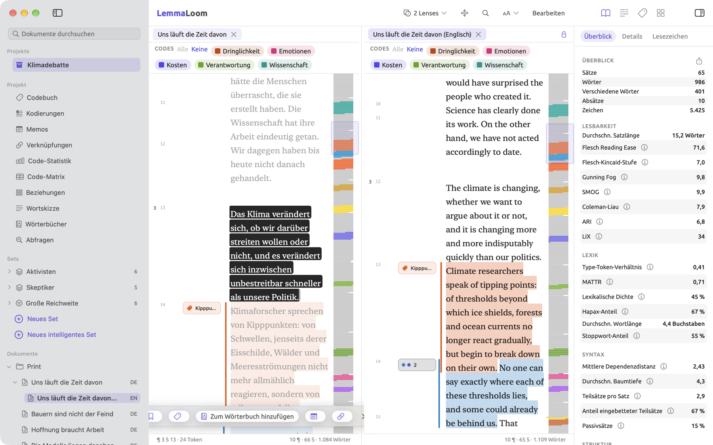
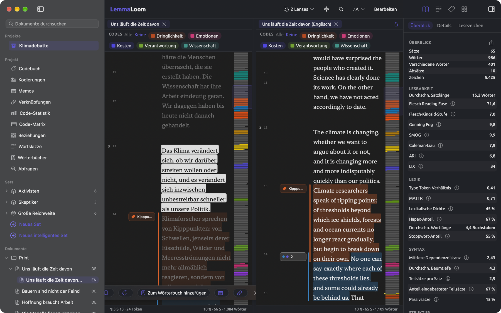
| Schaltfläche | Wo sie liegt | Entspricht | Kurzbefehl |
|---|---|---|---|
| Seitenleiste ein-/ausblenden | Linkes Ende der Symbolleiste des Fensters | Darstellung ▸ Seitenleiste ein-/ausblenden | ⌃⌘S |
| Inspektor ein-/ausblenden | Rechtes Ende der Symbolleiste des Fensters | Darstellung ▸ Inspektor ein-/ausblenden | ⌃⌘I |
| × auf einem Tab (Tab schließen) | Tableiste | Ablage ▸ Tab schließen, für den aktiven Tab | ⌘W |
| × auf dem Tab des rechten Bereichs (Geteilte Ansicht schließen) | Oben im rechten Bereich der geteilten Ansicht | Ablage ▸ Tab schließen, wenn der rechte Bereich aktiv ist | ⌘W |
| Das Schloss (Gemeinsam scrollen) | Oben im rechten Bereich, wenn zwei Sprachfassungen nebeneinanderstehen | Darstellung ▸ Gemeinsam scrollen | ⌥⌘L |
| Im Dokument suchen (die Lupe) | Titelleiste | Bearbeiten ▸ Suchen | ⌘F |
| Größerer Text, Kleinerer Text, Textgröße zurücksetzen | Das Menü Schrift, Randspalte und Textgröße in der Titelleiste | Die gleichnamigen Befehle im Menü Darstellung | ⌘+, ⌘-, ⌘0 |
| Bearbeiten | Titelleiste | Dokument ▸ Bearbeiten | ⇧⌘E |
| Sichern und Abbrechen | Titelleiste, während der Bearbeitung | Dokument ▸ Sichern und Dokument ▸ Abbrechen | ⌘↩ und ⌘. |
| Nächster Treffer und Vorheriger Treffer (die Pfeile nach unten und nach oben) | Suchleiste | Bearbeiten ▸ Weitersuchen und Bearbeiten ▸ Rückwärts suchen | ⌘G und ⇧⌘G |
| Suchleiste schließen (×) | Suchleiste | Bearbeiten ▸ Suchen, solange die Leiste offen ist | ⌘F oder Esc |
| Lesezeichen oder Lesezeichen entfernen | Auswahlleiste | Dokument ▸ Lesezeichen | ⇧⌘B |
| Code | Auswahlleiste | Dokument ▸ Code | ⇧⌘C |
| In vivo „…“ | Letzter Eintrag der Code-Palette | Dokument ▸ In-vivo-Code | ⇧⌘V |
| Memo | Auswahlleiste | Dokument ▸ Memo | ⇧⌘M |
| Verknüpfung oder Verknüpfung abschließen | Auswahlleiste | Dokument ▸ Verknüpfung | ⇧⌘L |
| Ausstehende Verknüpfung abbrechen (das durchgestrichene Verknüpfungssymbol) | Auswahlleiste, solange Sie eine Verknüpfung anlegen | Dokument ▸ Verknüpfung abbrechen | ⌥⇧⌘L |
| Auswahl aufheben (×) | Auswahlleiste | Kein Menübefehl | Esc |
| Wiedergabe oder Pausieren | Wiedergabeleiste | Dokument ▸ Wiedergabe | ⇧⌘P |
| Abfrage ausführen (das Dreieck) | Die Leiste über einer Abfrage | Bearbeiten ▸ Abfrage ausführen | ⌘R |
| Zurück und Vorwärts (die Pfeile) | Die Leiste über einer Wortskizze | Darstellung ▸ Wortskizze ▸ Zurück und Vorwärts | ⌘[ und ⌘] |
| Grammatik, Kodierung und Multimodus | Die Modusauswahl in der Ansicht Wortskizze und im Wortskizzen-Fenster | Die gleichnamigen Befehle unter Darstellung ▸ Wortskizze | ⌘1, ⌘2, ⌘3 |
| Vergrößern und Verkleinern (die Lupen) | Die Zoomleiste des Fensters „Diagramm“ | Darstellung ▸ Vergrößern und Darstellung ▸ Verkleinern | ⌘+ und ⌘- |
Im Vollbildmodus wandern die Werkzeuge der Titelleiste in die Symbolleiste des Fensters (siehe Die Leseansicht im Vollbildmodus in Kapitel 5, Lesen und Bearbeiten). Ihre Kurzbefehle funktionieren weiterhin, und das Menü für den Text heißt dort Leseansicht-Einstellungen.
Esc-Taste, Zeilenschalter und Pfeiltasten
Die Esc-Taste, der Zeilenschalter und die Pfeiltasten wirken außerhalb der Menüs, und was sie tun, hängt davon ab, wo Sie sich gerade befinden.
Die Esc-Taste schließt oder leert, womit Sie gerade arbeiten:
- In der Leseansicht hebt die Esc-Taste die Auswahl auf, lässt eine ausstehende Verknüpfung aber unberührt. Wollen Sie eine Verknüpfung doch nicht anlegen, wählen Sie Dokument ▸ Verknüpfung abbrechen (⌥⇧⌘L).
- In der Suchleiste schließt sie die Leiste und leert die aktuelle Suche.
- In der Code-Palette schließt sie die Palette, und Ihre Auswahl bleibt erhalten.
- Im Feld Dokumente durchsuchen und in der Seitenleiste leert sie die Suchergebnisse und zeigt wieder alle Dokumente.
- In Dialogen mit einer Schaltfläche Abbrechen löst sie diese Schaltfläche aus.
- Drücken Sie die Esc-Taste, während Sie ein Projekt, ein Dokument, ein Set, eine Gruppe oder ein Tag umbenennen, bleibt der alte Name erhalten.
In der geteilten Ansicht wirkt die Esc-Taste in der Leseansicht nur auf den aktiven Bereich.
Der Zeilenschalter bestätigt Eingaben, übernimmt eine Wahl oder öffnet, was Sie ausgewählt haben:
- In der Suchleiste springen Sie mit dem Zeilenschalter zum nächsten Treffer des Suchbegriffs (wie mit ⌘G); im Feld Dokumente durchsuchen öffnet der Zeilenschalter dagegen das erste gefundene Dokument.
- In der Seitenleiste öffnen Sie ein Dokument per Klick oder mit dem Zeilenschalter.
- In anderen Listen, etwa in den Ansichten Codebuch, Kodierungen, Memos und Verknüpfungen oder im Tags-Fenster, wählt ein Klick ein Element aus, und ein Doppelklick oder der Zeilenschalter öffnet es.
- In der Code-Palette wendet der Zeilenschalter den hervorgehobenen Eintrag an (nach einer Eingabe in Codes suchen liegt die Hervorhebung auf dem ersten verbliebenen Eintrag). Hat die Auswahl den hervorgehobenen Code bereits, entfernt der Zeilenschalter ihn.
- Liegt der Fokus in einem Dialog auf keinem Feld oder auf einem einzeiligen Feld, das den Zeilenschalter nicht selbst verarbeitet, löst der Zeilenschalter die hervorgehobene Schaltfläche aus, etwa Sichern oder Automatisch kodieren; die Felder in den folgenden Punkten verarbeiten den Zeilenschalter selbst, auch in einem Dialog.
- Beim Umbenennen, auch eines Wörterbuchs in der Ansicht Wörterbücher, bestätigen der Zeilenschalter oder ein Klick an eine andere Stelle immer die Eingabe.
- Die Felder Tag hinzufügen akzeptieren immer den Zeilenschalter oder Kommas als Trennzeichen zwischen Tags.
- In Feldern Begriff hinzufügen in Textregeln von Abfragen und in Wörterbuchkategorien fügt der Zeilenschalter den Begriff hinzu. In einer Abfrage nehmen diese Felder auch mehrere Begriffe auf, durch Kommas getrennt.
- Haben Sie den Namen eines neuen Attributs in sein Feld eingegeben, fügt der Zeilenschalter das Attribut hinzu.
- In den Dialogen Dokument importieren und Dokumenteigenschaften fügt der Zeilenschalter das eingegebene Muster unter Von der Indizierung ausschließen hinzu.
- In den Feldern Wort der Wortskizze, der Code-Skizze und des Skizzenraums erhalten Sie mit dem Zeilenschalter die Skizze des eingegebenen Begriffs.
- Im Fenster „Analysatoren“ schließlich löst der Zeilenschalter Sichern aus, während Sie in Name oder in einem Feld Beschriftung tippen.
Mit ↑ und ↓ bewegen Sie sich durch die Seitenleiste und die Code-Palette:
- In der Seitenleiste wechseln ↑ und ↓ zur vorherigen oder nächsten Zeile; ein anschließender Druck auf den Zeilenschalter öffnet das neu ausgewählte Dokument.
- Mit ↓ im Feld Dokumente durchsuchen wählen Sie das erste Dokument aus den Ergebnissen aus und wechseln in die Liste.
- In der Code-Palette heben ↑ und ↓ nacheinander die Einträge der Palette hervor, einschließlich Code „…“ hinzufügen und In vivo „…“ an ihrem Ende.
In der Tabelle einer Kategorie in der Ansicht Wörterbücher entfernt die Rückschritttaste (⌫) die ausgewählten Begriffe.
Klicks mit Sondertaste
Bei einigen Aktionen kombinieren Sie eine Taste mit der Maus oder dem Trackpad.
| Tasten | Wo | Was geschieht |
|---|---|---|
| ⌘-Klick | Ein Dokument im Abschnitt Dokumente der Seitenleiste | Fügt das Dokument der Auswahl hinzu oder entfernt es wieder daraus |
| ⇧-Klick | Ein Dokument im Abschnitt Dokumente der Seitenleiste | Fügt alle Dokumente zwischen diesem und dem zuletzt angeklickten der Auswahl hinzu |
| ⌘ und Scrollen | Die Karte einer Wortskizze, in der Wortskizze, in der Code-Skizze oder im Skizzenraum | Zoomt um den Mauszeiger herum hinein oder heraus. Einfaches Scrollen verschiebt die vergrößerte Karte. |
Wählen Sie mehrere Dokumente aus und klicken Sie mit der rechten Maustaste auf eines davon, um Aktionen aufzurufen, die auf alle ausgewählten Dokumente wirken (siehe Mehrere Dokumente auswählen in Kapitel 3, Projekte und Dokumente). Das Zoomen beschreibt Die Karte in Kapitel 12, Wortskizze im Einzelnen.
Alle Kurzbefehle nach Tasten
Diese Tabelle enthält alle Kurzbefehle aus den Menüs von LemmaLoom, geordnet zuerst nach Sondertaste und dann nach Taste. Sie hilft, wenn Sie herausfinden möchten, welchen Befehl Sie versehentlich ausgelöst haben oder ob Tasten, die Sie selbst belegen möchten, schon vergeben sind.
| Tasten | Befehl |
|---|---|
| ⌘, | LemmaLoom ▸ Einstellungen … |
| ⌘. | Dokument ▸ Abbrechen |
| ⌘+ | Darstellung ▸ Größerer Text oder, im Fenster „Diagramm“, Darstellung ▸ Vergrößern |
| ⌘- | Darstellung ▸ Kleinerer Text oder, im Fenster „Diagramm“, Darstellung ▸ Verkleinern |
| ⌘[ | Darstellung ▸ Wortskizze ▸ Zurück |
| ⌘] | Darstellung ▸ Wortskizze ▸ Vorwärts |
| ⌘0 | Darstellung ▸ Textgröße zurücksetzen oder, im Fenster „Diagramm“, Darstellung ▸ Originalgröße |
| ⌘1 bis ⌘3 | Darstellung ▸ Wortskizze ▸ Grammatik, Kodierung und Multimodus |
| ⌘A | Bearbeiten ▸ Alles auswählen |
| ⌘C | Bearbeiten ▸ Kopieren |
| ⌘F | Bearbeiten ▸ Suchen |
| ⌘G | Bearbeiten ▸ Weitersuchen |
| ⌘H | LemmaLoom ▸ „LemmaLoom“ ausblenden |
| ⌘L | Darstellung ▸ Wortskizze ▸ Wortfeld aktivieren |
| ⌘M | Fenster ▸ Im Dock ablegen |
| ⌘N | Ablage ▸ Neues Fenster |
| ⌘Q | LemmaLoom ▸ „LemmaLoom“ beenden |
| ⌘R | Bearbeiten ▸ Abfrage ausführen |
| ⌘V | Bearbeiten ▸ Einsetzen |
| ⌘W | Ablage ▸ Tab schließen oder Ablage ▸ Schließen |
| ⌘X | Bearbeiten ▸ Ausschneiden |
| ⌘Z | Bearbeiten ▸ Widerrufen |
| ⌘↩ | Dokument ▸ Sichern |
| ⌘⌫ | Projekt ▸ Projekt löschen, Set löschen, Gruppe löschen, Dokument löschen oder Dokumente löschen; im Fenster „Analysatoren“ Bearbeiten ▸ Analysator löschen |
| ⇧⌘/ | Das Suchfeld im Menü Hilfe |
| ⇧⌘[ | Fenster ▸ Vorherigen Tab anzeigen |
| ⇧⌘\ | Darstellung ▸ Alle Tabs einblenden |
| ⇧⌘] | Fenster ▸ Nächsten Tab anzeigen |
| ⇧⌘A | Dokument ▸ Automatisch kodieren… |
| ⇧⌘B | Dokument ▸ Lesezeichen oder Lesezeichen entfernen |
| ⇧⌘C | Dokument ▸ Code |
| ⇧⌘E | Dokument ▸ Bearbeiten |
| ⇧⌘F | Bearbeiten ▸ Dokument suchen |
| ⇧⌘G | Bearbeiten ▸ Rückwärts suchen |
| ⇧⌘I | Ablage ▸ Importieren ▸ Dokumente |
| ⇧⌘L | Dokument ▸ Verknüpfung oder Verknüpfung abschließen |
| ⇧⌘M | Dokument ▸ Memo |
| ⇧⌘N | Ablage ▸ Neues Projekt |
| ⇧⌘P | Dokument ▸ Wiedergabe oder Pausieren |
| ⇧⌘V | Dokument ▸ In-vivo-Code |
| ⇧⌘W | Ablage ▸ Fenster schließen |
| ⇧⌘Z | Bearbeiten ▸ Wiederholen |
| ⌥⌘0 | Fenster ▸ Aktivität |
| ⌥⌘1 bis ⌥⌘4 | Darstellung ▸ Inspektor ▸ Text, Grammatik, Kodierung und Multimodus |
| ⌥⌘H | LemmaLoom ▸ Andere ausblenden |
| ⌥⌘L | Darstellung ▸ Gemeinsam scrollen |
| ⌥⌘N | Ablage ▸ Neue Gruppe |
| ⌥⇧⌘I | Ablage ▸ Importieren ▸ Webseiten |
| ⌥⇧⌘L | Dokument ▸ Verknüpfung abbrechen |
| ⌃⌘F | Darstellung ▸ Vollbildmodus oder Vollbildmodus aus |
| ⌃⌘I | Darstellung ▸ Inspektor ein-/ausblenden |
| ⌃⌘S | Darstellung ▸ Seitenleiste ein-/ausblenden |
| ⌃Tab | Fenster ▸ Nächsten Tab anzeigen (zusammengeführte Fenster) |
| ⌃⇧Tab | Fenster ▸ Vorherigen Tab anzeigen (zusammengeführte Fenster) |
| fn E | Bearbeiten ▸ Emoji & Symbole |
| ⌃fn C | Fenster ▸ Zentriert |
| ⌃fn F | Fenster ▸ Füllen |
Kodieren mit der Tastatur
Eine Textstelle wählen Sie mit der Maus oder dem Trackpad aus, doch fast alles Übrige lässt sich mit der Tastatur erledigen. Angenommen, Sie lesen „Klimadebatte“ auf der Suche nach Textstellen über Fristen. „Uns läuft die Zeit davon“ und „Brief vom Klimastreik“ sind in Tabs geöffnet, und „Uns läuft die Zeit davon“ ist aktiv. Um das Beispiel nachzuvollziehen, können Sie das Beispielprojekt mit Ablage ▸ Importieren ▸ Beispielprojekt importieren.
- Drücken Sie ⌥⌘3. Der Inspektor zeigt seinen Tab Kodierung.
- Drücken Sie ⌘F und geben Sie
Ruhestandein. Die Leseansicht springt zum einzigen Treffer, im Absatz über die Jahreszahlen, die die Regierenden versprochen haben. - Drücken Sie die Esc-Taste, um die Suchleiste zu schließen.
- Wählen Sie den Satz Eine Frist, die erst abläuft, wenn alle heutigen Amtsträger im Ruhestand sind, ist überhaupt keine Frist. aus.
- Drücken Sie ⇧⌘C. Die Code-Palette öffnet sich, und die Einfügemarke steht in Codes suchen.
- Geben Sie
fristein. „Fristen“ ist der einzige Code, der in der Liste übrig bleibt. - Drücken Sie den Zeilenschalter. „Fristen“ erhält ein Häkchen, und die Palette bleibt geöffnet.
- Drücken Sie die Esc-Taste, um die Palette zu schließen. Die Textstelle ist weiterhin ausgewählt.
- Drücken Sie ⇧⌘M. Der Dialog Neues Memo öffnet sich.
- Klicken Sie in das Feld Memo und geben Sie eine Notiz ein, etwa
Die Ziele werden erst fällig, wenn ihre Urheber im Ruhestand sind; mit Brief vom Klimastreik vergleichen. - Klicken Sie auf Sichern.
- Drücken Sie ⇧⌘], um zu „Brief vom Klimastreik“ weiterzugehen.
Haben Sie einen Code auf die falsche Textstelle angewendet, schließen Sie die Palette und drücken Sie ⌘Z. Bearbeiten ▸ Code anwenden widerrufen nimmt die Kodierung zurück. Solange die Palette noch aktiv ist, entfernt ein weiterer Druck auf den Zeilenschalter „Fristen“ wieder.
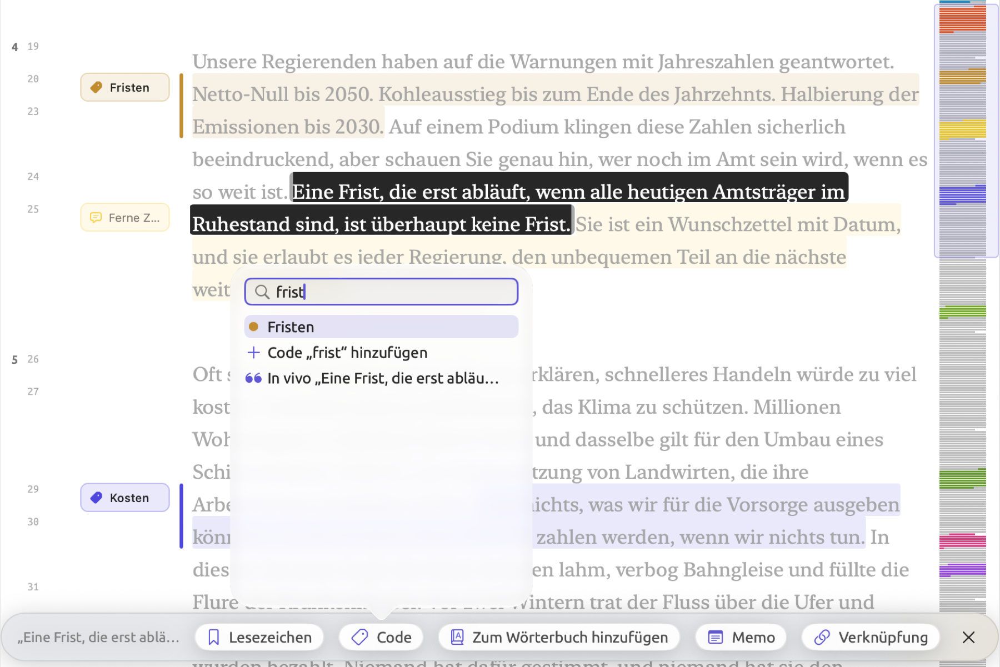
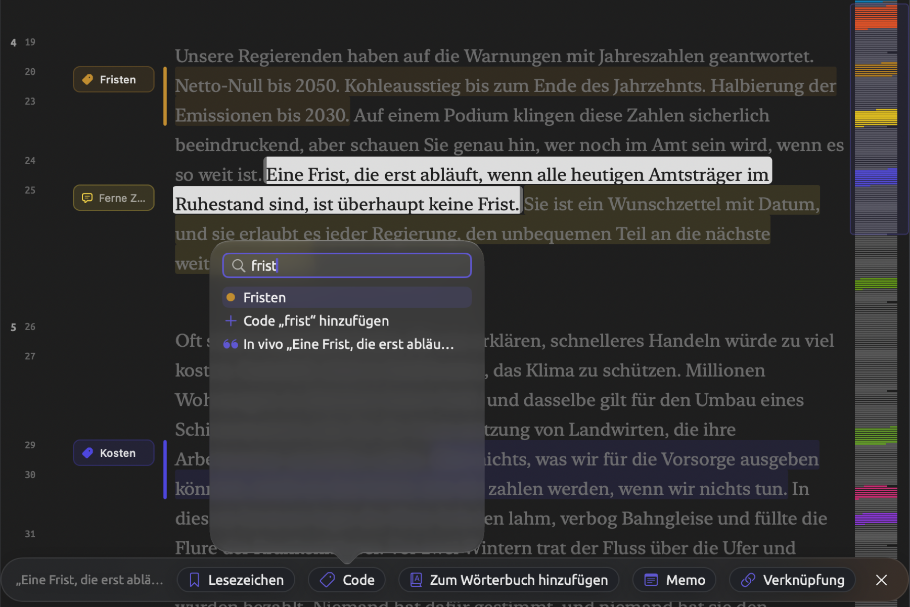
Eigene Tastaturkurzbefehle hinzufügen
In macOS können Sie jedem Menübefehl in jedem Programm einen Tastaturkurzbefehl zuweisen. So rufen Sie Befehle, die Sie regelmäßig verwenden, schnell auf, etwa Bearbeiten ▸ Abfrage aus Auswahl und Projekt ▸ Code hinzufügen. Ebenso können Sie vorhandene Kurzbefehle nach Ihren Wünschen neu belegen.
- Öffnen Sie die Systemeinstellungen und klicken Sie auf Tastatur.
- Klicken Sie auf Tastaturkurzbefehle ….
- Klicken Sie in der Liste links auf App-Kurzbefehle.
- Klicken Sie auf die Schaltfläche zum Hinzufügen (+).
- Wählen Sie LemmaLoom als Programm.
- Geben Sie als Menütitel den Namen des Befehls genau so ein, wie das Menü ihn zeigt, etwa
Abfrage aus Auswahl. - Klicken Sie in das Feld für den Kurzbefehl und drücken Sie eine Tastenkombination, die noch frei ist (siehe Alle Kurzbefehle nach Tasten weiter oben in diesem Kapitel), etwa ⌃⌥⌘Q.
- Klicken Sie auf Fertig.
Wenn Sie einem Eintrag mit Auslassungspunkten im Namen Tasten zuweisen, etwa Automatisch kodieren…, geben Sie die Auslassungspunkte als ein einziges Zeichen ein. Auf der US-Tastatur drücken Sie dafür die Wahltaste zusammen mit der Semikolontaste, statt drei Punkte einzugeben. Einige Einträge kommen in den Menüs des Programms zweimal vor (REFI-QDA-Projekt etwa steht sowohl unter Importieren als auch unter Exportieren). In einem solchen Fall geben Sie den ganzen Pfad zum Befehl ein, mit dem Trennzeichen -> zwischen den Menüs, etwa Ablage->Exportieren->REFI-QDA-Projekt.
Nach dem Sichern erscheint der Kurzbefehl im Menü von LemmaLoom neben dem Befehl. Ist das nicht der Fall, beenden Sie LemmaLoom und starten Sie das Programm erneut.
macOS erkennt Befehle an den Namen ihrer Menüeinträge. Der eingegebene Name muss deshalb mit dem Namen des Menüeintrags in der gerade gewählten Sprache des Programms übereinstimmen. Wechseln Sie die Sprache, legen Sie die Kurzbefehle unter den neuen Befehlsnamen erneut fest, auf Englisch etwa unter Query from Selection. Aus demselben Grund reagiert ein Befehl, der seinen Namen ändert, nur unter dem eingegebenen Namen auf Ihren Kurzbefehl. Tasten, die Sie dem Befehl Automatisch kodieren… zugewiesen haben, funktionieren nicht mehr, sobald mehrere Lenses gleichzeitig aktiviert sind, die automatisch kodieren können, denn das Menü bietet dann stattdessen Mit Heckenausdrücke automatisch kodieren… und ähnliche Befehle an.